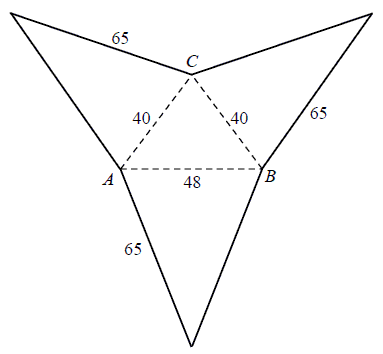

Matura 2014 maj PR
Dana jest funkcja \( f \) określona wzorem \(
f(x)=\frac{\vert{x+3}\vert+\vert{x-3}\vert}{x} \) dla każdej liczby rzeczywistej \( x\ne 0 \).
Wyznacz zbiór wartości tej funkcji.
\((-\infty ;-2\rangle \cup \langle 2;+\infty ) \)
Wyznacz wszystkie wartości parametru \( m \), dla których funkcja kwadratowa \(
f(x)=x^2-(2m+2)x+2m+5 \) ma dwa różne pierwiastki \( \ x_1, x_2 \) takie, że suma kwadratów
odległości punktów \( A=(x_1, 0)\ \text{i}\ B=(x_2, 0) \) od prostej o równaniu \( x+y+1=0 \) jest
równa \( 6 \).
\(m=-3\)
Rozwiąż równanie \( \sqrt{3}\cdot \cos x=1+\sin x \) w przedziale \( \langle 0,
2\pi \rangle \) .
\(x=\frac{3\pi }{2}\) lub \(x=\frac{\pi }{6}\)
Udowodnij, że dla każdych dwóch liczb rzeczywistych dodatnich \( x, y \) prawdziwa
jest nierówność \((x+1)\frac{x}{y}+(y+1)\frac{y}{x}>2 \).
Dane są trzy okręgi o środkach \( A, B, C \) i promieniach równych odpowiednio \(
r, 2r, 3r \). Każde dwa z tych okręgów są zewnętrznie styczne: pierwszy z drugim w punkcie \( K \),
drugi z trzecim w punkcie \( L \) i trzeci z pierwszym w punkcie \( M \). Oblicz stosunek pola
trójkąta \( KLM \) do pola trójkąta \( ABC \).
\(\frac{1}{5}\)
Trójkąt \( ABC\ \) jest wpisany w okrąg o środku \( S \). Kąty wewnętrzne \( CAB,
ABC \) i \( BCA \) tego trójkąta są równe, odpowiednio, \( \alpha , 2\alpha \) i \( 4\alpha \).
Wykaż, że trójkąt \( ABC \) jest rozwartokątny, i udowodnij, że miary wypukłych kątów środkowych \(
ASB, ASC \) i \( BSC\ \) tworzą w podanej kolejności ciąg arytmetyczny.
Ciąg geometryczny \( (a_n) \) ma \( 100 \) wyrazów i są one liczbami dodatnimi.
Suma wszystkich wyrazów o numerach nieparzystych jest sto razy większa od sumy wszystkich wyrazów o
numerach parzystych oraz \( \log a_1+\log a_2+\log a_3+...+\log a_{100}=100 \). Oblicz \( a_1 \).
\(a_1=10^{100}\)
Punkty \( A, B, C, D, E, F \) są kolejnymi wierzchołkami sześciokąta foremnego,
przy czym \( A=(0, 2\sqrt{3}),B=(2,0) \), a \( C \) leży na osi \( \ Ox \). Wyznacz równanie
stycznej do okręgu opisanego na tym sześciokącie przechodzącej przez wierzchołek \(E \).
\(y=-\frac{\sqrt{3}}{3}x+6\sqrt{3}\)
Oblicz objętość ostrosłupa trójkątnego \( ABCS \), którego siatkę przedstawiono na
rysunku. 
\(V=15360\)
Wyznacz wszystkie całkowite wartości parametru \( m \), dla których równanie \[
\left (x^3+2x^2+2x+1 \right) \left [ x^2-(2m+1)x+m^2+m \right]=0 \] ma trzy, parami różne,
pierwiastki rzeczywiste, takie że jeden z nich jest średnią arytmetyczną dwóch pozostałych.
\(m=-3\) lub \(m=0\)
Z urny zawierającej \(10\) kul ponumerowanych kolejnymi liczbami od \(1\) do \(10\)
losujemy jednocześnie trzy kule. Oblicz prawdopodobieństwo zdarzenia \( A \) polegającego na tym, że
numer jednej z wylosowanych kul jest równy sumie numerów dwóch pozostałych kul.
\(P(A)=\frac{1}{6}\)